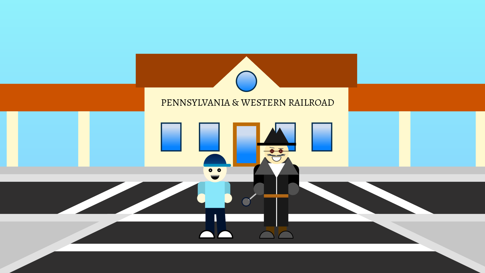
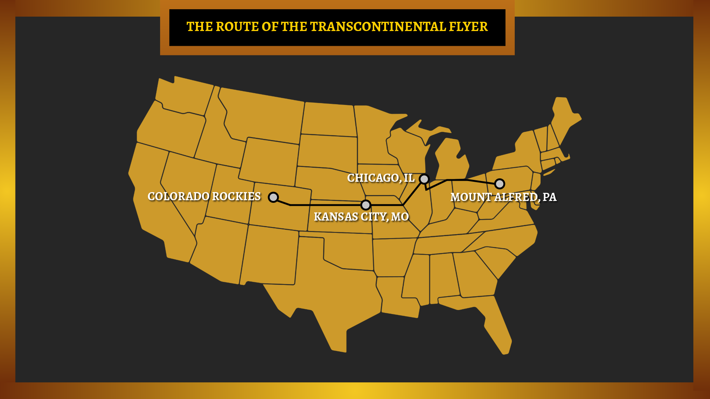
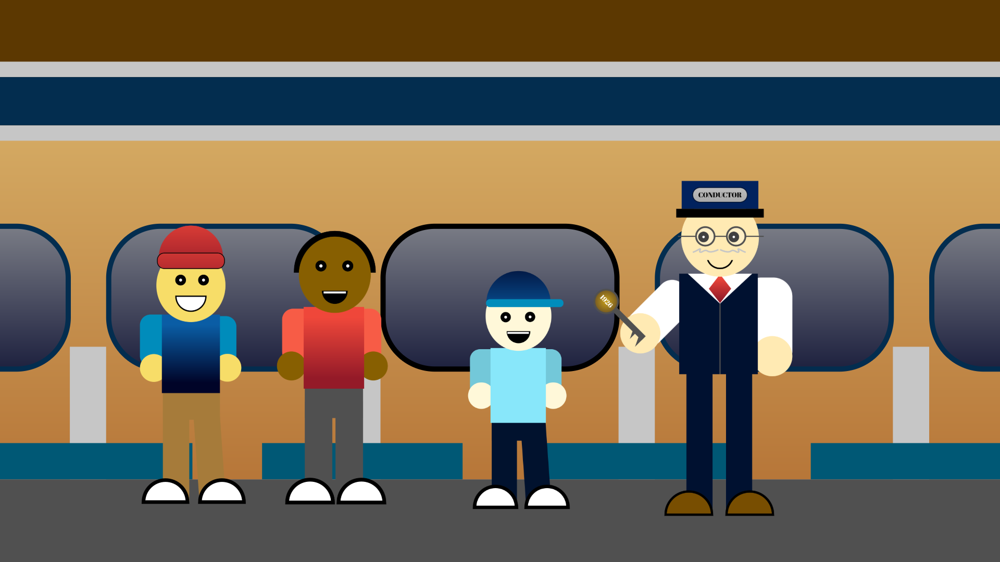

Scene 1

Felix arrives at Mount Alfred and hears the legend of a train that disappeared over 100 years ago.
Scene 2

Inside the abandoned station, Felix and friends discover an old journal and a mysterious map.
Scene 3

The clues lead deep inside an abandoned railroad tunnel where strange symbols cover the walls.
Scene 4

Mr. McGuffin gives Felix an old brass key and tells the truth about the missing locomotive.